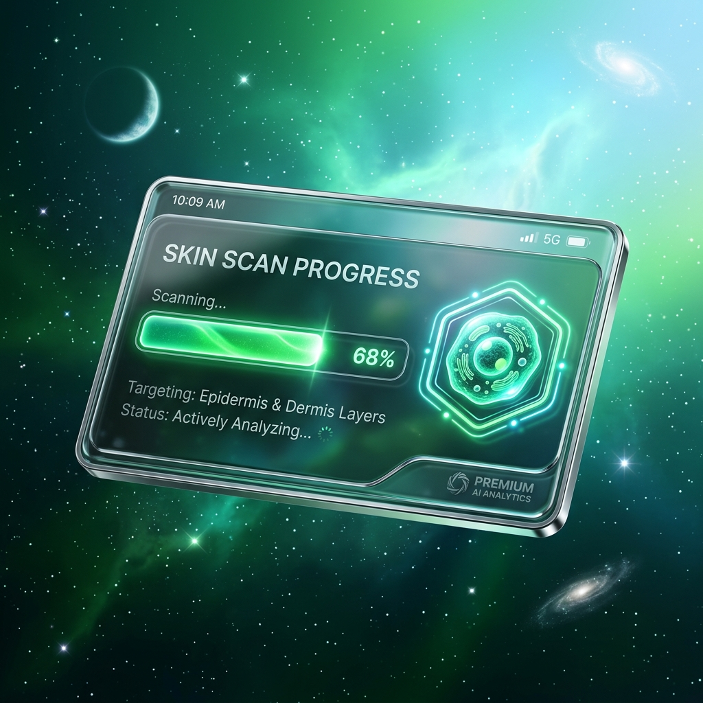
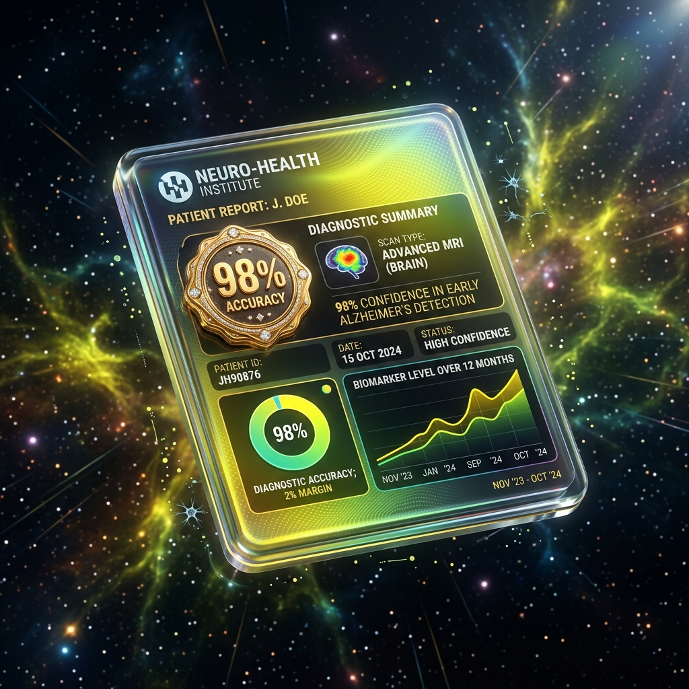
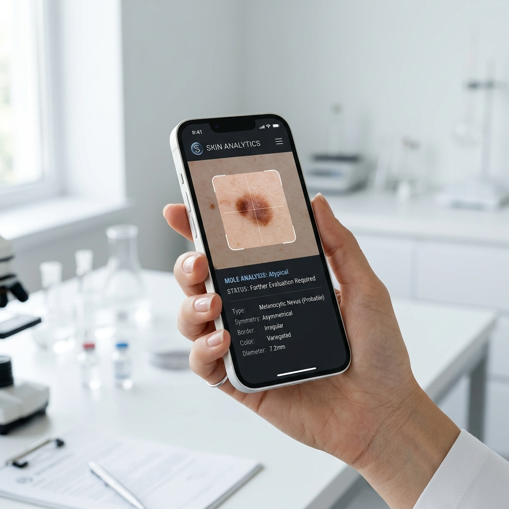
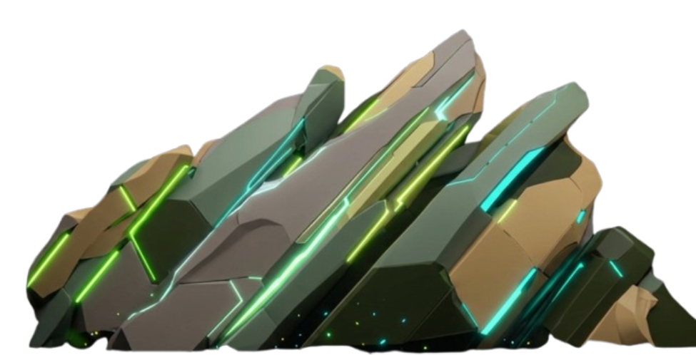

Diagnostics
Built for Precision.
Launch and scale AI-assisted skin screening on one platform for clinical analysis, early detection, and real-time diagnostic support. Start where you want, expand as you grow.
Everything you need to analyze,
detect, and keep innovating
Each module is powerful on its own.
Together, they unlock diagnostic precision that legacy systems can't.
Screening
Rapid AI scan for early detection with full visual feedback.

Diagnostics
Deep clinical analysis and detailed pathology reporting.

Collaboration
Secure shared database for collaborative medical case review.
Integration
Scalable hospital-grade API services for enterprise deployment.
Built on a Unified Platform
Most diagnostic tools were assembled. Skinderm AI was built as one.
Launch Faster
Deploy AI screening without managing fragmented medical datasets.
Collaborate Easily
Design workflows around patients, not technical platform constraints.
Keep Innovating
Add new diagnostic capabilities without rebuilding your foundation.
Designed to
Reveal More
Deep Learning Core
State-of-the-art ConvNeXtV2 architecture optimized for high-resolution dermatological image analysis and pixel-perfect accuracy.
Privacy-First Architecture
End-to-end encrypted diagnostic pipeline compliant with international medical data standards, ensuring patient confidentiality.
Real-time Inference
Sub-second feedback loops powered by enterprise-grade CUDA optimization for instant diagnostic support at the point of care.
Explainable AI (XAI)
Visual transparency via Grad-CAM heatmaps, showing clinicians exactly which areas the AI model focused on during analysis.

SKINDERM

How It Works
Explore the intelligence behind SkindermAI. Click on the nodes in the mind map below to uncover the diagnostic process.
-
SkindermAI Core
-
Image Input
- Preprocessing
- Anonymization
-
AI Analysis
- Feature Extraction
- Classification
-
Output & Review
- Grad-CAM Heatmap
- Clinical Report
-
Select a node
Click on any node in the mind map above to learn how it functions within the SkindermAI architecture.
Meet the Team
Learn how we are designing, launching, and scaling medical AI products.
SkindermAI
Vision Core
CodeByKDvn
Leader, Founder of SkindermAI
SkindermAI
Frontend Architecture
Tuan Minh
Reviewer, Frontend & UX UI developer